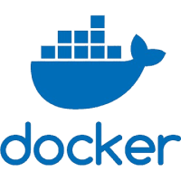
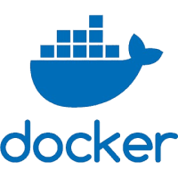

Administrer des systèmes informatiques communicants complexe
SAÉ1.03 - Installation d'un poste pour le développement
Résumer
Docker
Créer un programme en PHP et Bash qui génère une documentation technique et utilisateur d’un programme. Ce programme doit pouvoir prendre un code en C commenté et doit pour générer automatiquement une documentation technique et utilisateur.
Lien vers le sujetOutils
 

Langages

Acquis
- Programmation en PHP
- Programmation en Bash
- Esprit d'équipe